Green A Producer via Green Technology
Upholding the green philosophy that we only have one Earth, Nanya insists on leaving the best environment to every future generation. We actively manage all environmental impacts of our operations and adopt higher standards than required by law for energy, operations, and adopt higher standards than required by law for energy, resources, emissions, and waste to avoid or mitigate the risk of impacts. We also research and develop advanced and highly efficient products to assist consumers in lowering energy consumption and reducing carbon emissions when using products. We have set goals for our sustainability performance to fulfill our responsibility of cleaner production and to protect the natural environment. As climate change has become one of the most significant global risks, we implemented risk identification, assessment and management in accordance with the Task Force on Climate-related Financial Disclosures (TCFD) Recommendations to enhance our operational resilience under the climate change crisis.

- Included in CDP's Climate Change and Water Security A List in 2025 CDP A List
- The reduction rate of perfluorocarbon (PFCs) emissions during industrial processes 93.6 %
- Total energy savings from energy conservation measures completed between 2017 and 2025 78,773 MWh
Strategy and Performance of Material Topics
- Note 1: The annual carbon reduction target was not achieved as the 2025 market recovery drove greenhouse gas emissions beyond the levels projected in the original emission reduction plan.
- Note 2: Due to an issue with the MBR membrane in the wastewater treatment system, the volume of reclaimed water was reduced, resulting in water consumption per unit of production capacity not meeting the target.
 Nature and Climate Management
Nature and Climate Management

Nanya Technology recognizes the dependencies and risk impacts of our operations (production site: Nanlin Science Park) and value chain on nature and climate. In 2023, we became an early adopter of the Task Force on Nature-related Financial Disclosures (TNFD). Following the TNFD and International Financial Reporting Standards S2 (IFRS S2), we announced a biodiversity policy and established a robust LEAP operational mechanism to assess nature- and climate related dependencies and risks across our operations, upstream suppliers, and downstream customers. We also formulated response strategies (including transition plans) and actions, set management targets and indicators, and aim to mitigate impacts of risks.
Nanya Technology TNCFD Framework
- Governance
- Strategy
- Risk Management
- Indicators and Targets
-
Governance
Management Strategies and Actions
- At the Board of Directors' governance level, nature and climate are listed as Board of Directors topics, and a Sustainable Development Committee was established to implement relevant management practices.
- At the executive level, management participates in quarterly sustainable management and risk management meetings to review performance and resolve action items. A cross-departmental Sustainability and Risk Management Division under the President Office is responsible for coordination.
- Efforts are underway to strengthen governance capabilities on nature and climate among the Board of Directors, management, and all employees.
2025 Implementation Status- In 2025, Nanya Technology convened a total of six Board meetings and two Sustainable Development Committee meetings.
- Each year, the Risk Management Steering Center evaluates the identified material nature- and climate-related risks. In 2025, response measures were implemented for 183 risks based on their risk levels, and the risks are continuously monitored.
- In 2025, Board members completed 111 hours of training , with courses covering a diverse range of topics such as ESG governance, economics, corporate governance, sustainable finance, carbon pricing mechanisms, climate change, power systems, risk management, and ESG-related laws and regulations.
-
Strategy
Management Strategies and Actions
- Climate-related risks and opportunities that can reasonably be expected to affect the entity's outlook.
- Information on the current and anticipated impacts of climate-related risks and opportunities on the entity's business model and value chain.
- Impacts of climate-related risks and opportunities on the entity's current and anticipated financial position, financial performance, and cash flows.
- Climate-related scenario analysis and assessment of climate resilience.
2025 Implementation Status -
Risk Management
Management Strategies and Actions
- In line with the Company's Risk Management Procedure, we assess the materiality of risks and opportunities arising from various scenarios related to natural factors and climate change. Relevant response plans are formulated, integrated into the Enterprise Risk Management (ERM) framework, and regularly confirmed by senior management. A comprehensive contingency plan was formulated for nature- and climate-related risks.
- Imposition of Carbon Fees: Following the Ministry of Environment's 2024 announcement of fee-charging rates of carbon fees, with implementation starting in 2025 and fee imposition beginning in 2026.
- GHG emissions for Scopes 1, 2, and 3 are inventoried and verified annually to identify emission sources and prioritize management efforts.
- Promoting product life cycle assessments and addressing emission hotspots.
2025 Implementation Status- Key risks identified are primarily transition risks, including changes in the national energy structure, customer demand for low-carbon products, and the impact of fulfilling SBT commitments. These three mid-term risks are estimated to have a financial impact equivalent to approximately 3-4% of the Company's annual revenue.
- In response to the imposition of carbon fees in 2026, a carbon fee rate of NT$300 per tCO2 e was applied, resulting in a payment of NT$132 million, accounting for 0.002% of 2025 operating revenue.
- Major opportunities identified include product technology and new market development. As the net-zero trend continues, smart clean energy technologies are expected to drive growth in DRAM demand. According to IEA scenario analysis, the clean technology market is projected to triple by 2030. The Company will seize this opportunity by continuing to invest in innovative R&D resources, which accounted for 10.6% of total revenue in 2025.
- Based on the climate change water hazard maps published under the Taiwan Climate Change Projection Information and Adaptation Knowledge Platform (TCCIP), no risk of water shortage is projected under the RCP 8.5 mid-century scenario (2036–2065). Nanya Technology continues to promote water conservation and water recycling measures. Water consumption charges remain at the government's minimum applicable rate, with annual water fee increases limited to approximately 3%, resulting in a low impact on operating costs.
- GHG emissions in 2025 will be fully inventoried and verified by May 2026. A 100% product environmental footprint inventory has been completed. Management plan improvements have been launched for the top three carbon footprint hotspots identified in 2025.
-
Indicators and Targets
Management Strategies and Actions
- GHG-related Climate Indicators
- Compensation
- Basic Indicator Information for the Semiconductor Industry
- Disclosure of Targets Related to Climate Related Risks and Opportunities (Climate Related Targets)
2025 Implementation StatusGHG-related Climate Indicators
- GHG emissions of the Company are calculated in accordance with the methodologies specified by the GHG Protocol, and with reference to the emission factors published by the Ministry of Environment. The operational control approach is adopted to account for emissions from joint ventures and associated companies. This approach is selected as it reflects the Company's actual operational control more accurately, and ensures that GHG emissions data comprehensively and consistently represents the Company's operational impact. It also enables users to better understand performance related to climate-related risks and opportunities. The Scope 1, Scope 2, and Scope 3 GHG emissions generated during the reporting period of fiscal year 2025 are presented in "Mitigation – Greenhouse Gas Inventory," of 2025 Sustainability Report.
Compensation
- To strengthen senior management's understanding of climate-related risk management, Nanya Technology links executive performance evaluation to climate goals. Through the sustainability assessment of senior executives, the Company regularly tracks the implementation progress of medium- to long-term targets. This performance is incorporated into executive performance evaluation and compensation review to assess the implementation progress of climate strategy targets.
Disclosure of Targets Related to Climate Related Risks and Opportunities (Climate Related Targets)
- Nanya Technology has established a strategic target of achieving carbon neutrality by 2050, supported by specific sub-targets and indicators, including reductions in GHG emissions and improvements in energy efficiency. The Sustainable Development Committee and relevant management units hold regular performance review meetings to monitor progress and ensure the gradual achievement of the established strategic target.
- Nanya Technology responds to initiatives such as the Carbon Disclosure Project (CDP) and the Task Force on Climate-related Financial Disclosures (TCFD), as well as national policies on the 2050 net-zero emissions pathway. The Company references climate models and mitigation pathways developed by the Intergovernmental Panel on Climate Change (IPCC), and the Net Zero Emissions scenario of the International Energy Agency (IEA). Based on these frameworks, the Company has announced and committed to achieving carbon neutrality by 2050, in order to reduce exposure to climate risks, mitigate future carbon fee expenses, and enhance corporate resilience and sustainability competitiveness.

Greenhouse Gas Inventory
The Company conducts its GHG inventory with reference to ISO 14064 1, Ministry of Environment's Climate Change Response Act, Regulations for the Management of the Inventory, Registration, and Verification of Greenhouse Gas Emissions, Greenhouse Gas Emissions Inventory Guidelines, and the WBCSD/WRI GHG Protocol. Organizational boundaries are defined using the 100% operational control approach.
-
 GHG emissions in 2025
GHG emissions in 2025GHG emissions in 2025 totaled 417,308 metric tons CO2e ,the main sources of emissions were purchased electricity.
-
 Scope 3 GHG emissions categories in 2025
Scope 3 GHG emissions categories in 2025Among all Scope 3 GHG emissions categories, the highest GHG emissions came from the use of sold products, followed by purchased goods and services, and subsequently fuel- and energy-related activities not included in Scope 1 or 2.
Percentages of 2025 Emissions by Category
- Scope 1 and Scope 2
- Scope 3
-
Scope 1 and Scope 2
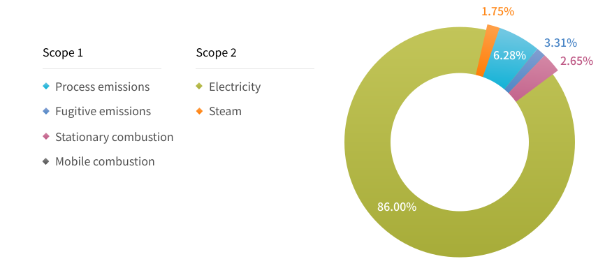
-
Scope 3
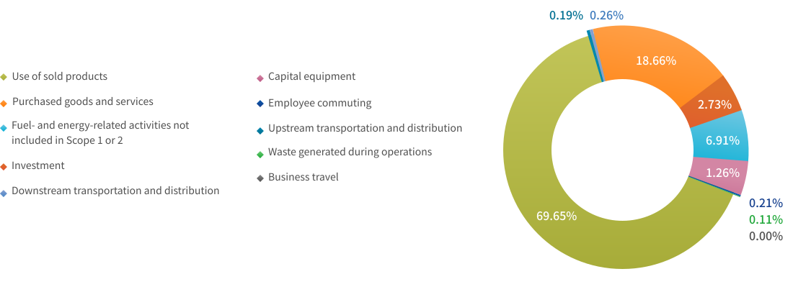

Greenhouse Gas Reduction
The Company actively promotes voluntary emission reductions. During facility planning, we procured high-efficiency local scrubbers. Currently, the thin-film and etching areas use burn-type PFC local scrubbers, which use high temperatures from combustion to destroy PFCs. To reduce fugitive PFCs emissions, Nanya Technology established local scrubber acceptance criteria for PFCs reduction rates: CF4 gas treatment efficiency must exceed 90%, reduction rates of C3F8, C4F6, C4F8, CHF3, CH2F2, and SF6 must exceed 95%, and NF3 reduction must exceed 99%. After installation, all local scrubbers undergo PFC abatement verification using FTIR3 to align with future reduction trends.
- 2024 Scope 1+2 GHG emissions was reduced by 12.9 % compared to 2020 12.9 %
-
Lower GHG emissions in the production process
Carbon-reduced
Manufacturing -
25% reduction in Scope 1 & 2 GHG emissions
27% reduction in Scope 3 GHG emissions per unit produced (Base year: 2020) 2030 SBT Reduction Target
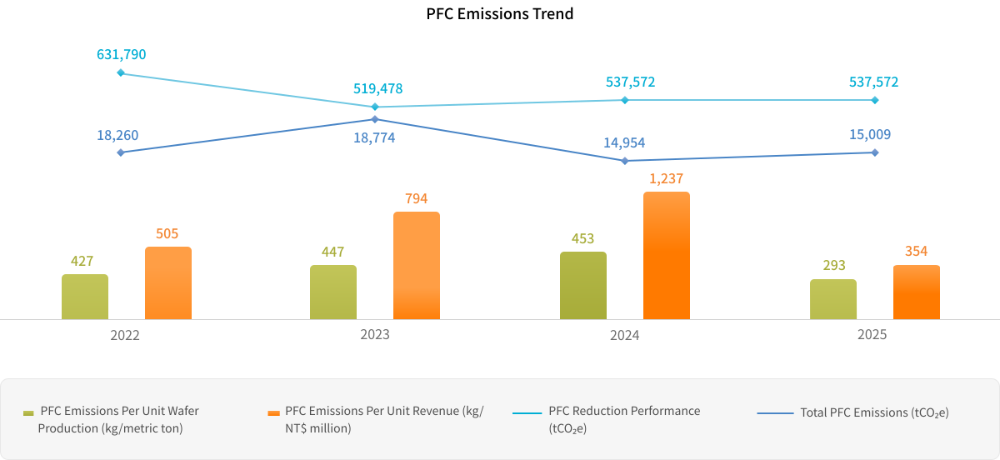
 Energy Resource Management
Energy Resource Management
Energy Structure
The environmental impact and finite availability of fossil fuels have become critical concerns, making effective energy management an urgent priority. Nanya Technology primarily uses purchased electricity, steam, and natural gas, and does not generate energy in-house. Indirect energy use which results in GHG emissions includes raw material transportation within facilities, raw material suppliers' production activities, waste transportation/treatment, employee business travel, and commuting.
Nanya Technology has developed an Energy Review Management Procedure to effectively manage its energy use and consumption. This procedure allows the Company to assess conditions of energy use and consumption, identify major energy-consuming operations and energy-saving opportunities, establish controls, and set measurable improvement targets to achieve energy conservation benefits.
- Energy Structure
- 2022-2025 Electricity Consumption
-
Energy Structure
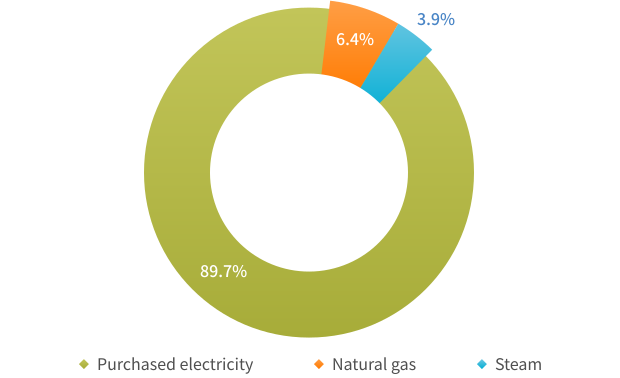
-
2022-2025 Electricity Consumption
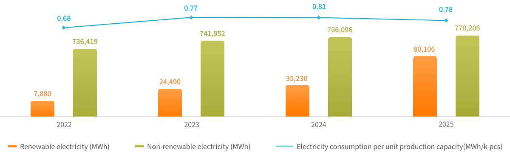
Renewable Energy and Usage Planning
In terms of renewable energy usage, Nanya Technology implements planning and execution in the following three key phases.
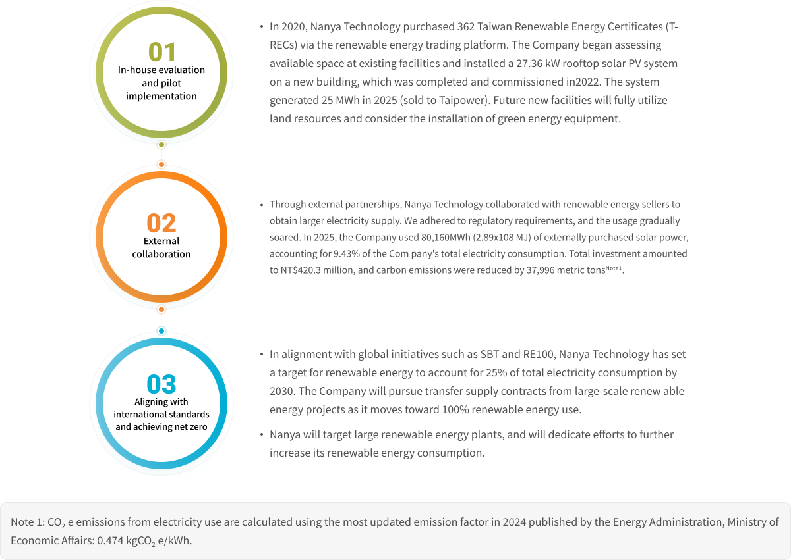
 Water Resource Management
Water Resource Management

Due to global climate change, rainfall in different regions of Taiwan has become increasingly polarized, resulting in both flooding and water shortages occurring simultaneously. Therefore, as a key member of the semiconductor industry, Nanya Technology has long been attuned to the water scarcity risks brought about by global climate change and deeply understands the impact that climate change and water can have on operations. To mitigate its environmental impact and the risks associated with water shortages, Nanya Technology continues to advance water conservation initiatives and is further committed to water reclamation and reuse. In 2023, the Company adopted the Alliance for Water Stewardship Standard (AWS) and, following its 2023 assessment, was awarded AWS's highest certification level, Platinum, in 2024. From the source of every drop of water to its use and final discharge, Nanya Technology practices pragmatic and effective water management to protect the ecosystem. Cherishing every drop of water, we continue to improve water usage efficiency while actively aligning with the international AWS standards and implementing the Five Outcomes to achieve sustainable water management in a systematic and ongoing manner.
Nanya Technology's efforts in water resource management have been recognized by international environmental evaluation bodies. From 2022 to 2023, the Company received an "A" leadership rating in the CDP Water Security category for two consecutive years. From 2022 to 2024, we also received the Taiwan Corporate Sustainability Award's Water Resource Management Leadership Award for three consecutive years, affirming its commitment to tackling climate change and water resource management while contributing to global sustainability goals.
- 2022-2023 CDP Water Security Leadership Level A
- 2022-2024 TCSA Water Resource Management Leadership Award
- Alliance for Water Stewardship Platinum Certification
Nanya Technology's Water Management Policy
Nanya Technology's water resource management policies and requirements apply to all operational, R&D, and manufacturing sites. Matters related to water usage, conservation, and risk assessments are compiled annually and reported to the Board of Directors for review.
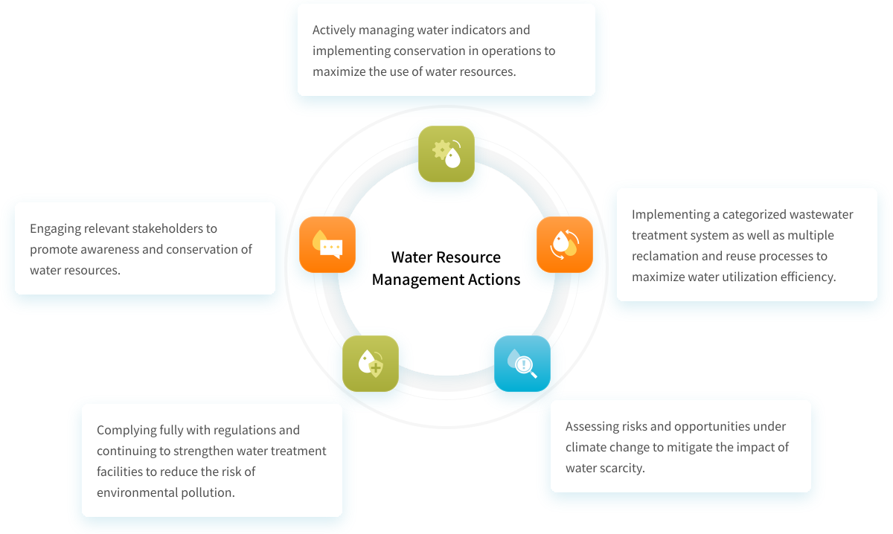
Water Resource Risk Management
Nanya Technology continues to strengthen its water management system and expand its water recycling capacity. The Company has established a robust contingency plan to mitigate the immediate impacts of short-term drought. The facility has a 43-million-liter water reservoir, a 0.5-million-liter detention basin for effective rainwater reclamation during the rainy season (temporarily suspended during FAB 5A construction), and seven wells. Nanya Technology also formed an emergency response organization for water shortages with neighboring plants of Formosa Plastics Group for mutual water-sharing support. Improvement work has been completed at the Shimen Reservoir watershed. The risk of service disruption due to turbidity from heavy rainfall has decreased. The Company can handle raw water turbidity up to 10,000 NTU, enabling it to manage most conditions. In terms of water reclamation and reuse, the effective treatment of acidic/alkaline wastewater, hydrofluoric wastewater, and organic wastewater using dedicated reclamation equipment led to the total volume of reclaimed water reaching 5,530 million liters in 2025. Through internal adaptation capacity and water recycling systems, Nanya Technology can operate for up to 14 days without an external water supply. As of now, there have been no production losses due to water shortages.
Nanya Technology continues to improve standard procedures and processes. It assesses water-related risks through its environmental and operational risk management frameworks, promotes related improvement measures, and formulates contingency plans. These are regularly reviewed by the Sustainable Development Steering Center and the Risk Management Steering Center at quarterly meetings. Moving forward, Nanya Technology will continue to enhance our capacity for water use and management. Newly constructed plants will include water regeneration centers, storage reservoirs, and backup water sources to address the uncertainties of climate change.
 Raw Material Reduction and Reuse
Raw Material Reduction and Reuse

Raw Material Reduction
Nanya Technology regularly reviews the rationality and appropriateness of raw material usage in production, and simplifies manufacturing processes to reduce material consumption. The Company's designated team sets annual raw material reduction targets and regularly reviews overall performance in raw material reduction. In 2025, a total of 32 proposals for raw material usage improvements were completed via the Kaizen Proposal System, including the development of new processes and formulas as well as reducing process duration to reduce consumption. Among the improvement projects implemented in 2025, the dry-free suck back (DFS) function was introduced in the PH area. By adjusting the photoresist nozzle cleaning formulation, the cleaning cycle was gradually extended from 1 hour to 24 hours. This effectively improved photoresist utilization efficiency, reducing the consumption of seven types of photoresist by approximately 34 liters per month(~97%), representing the most significant raw material reduction improvement project.
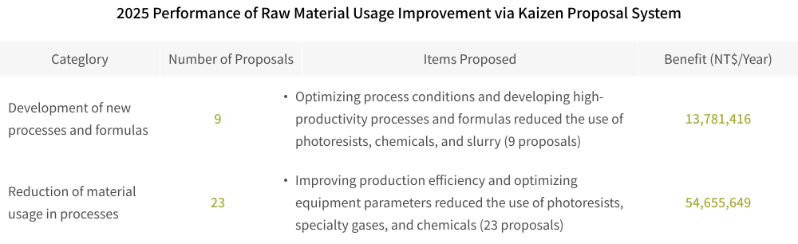
Recycling and reuse
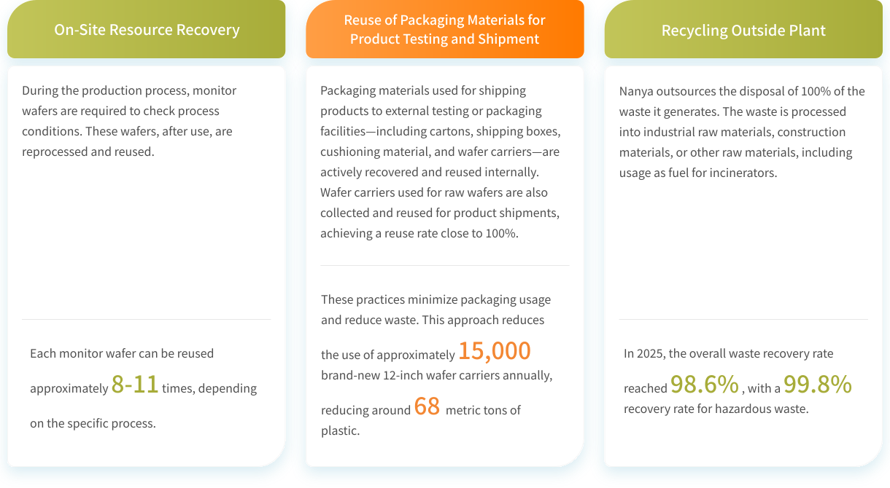
Waste Reduction Technology
Copper Waste Liquid Electrolytic Regeneration System
Nanya Technology's R&D team invested NT$8.29 million to establish an electrolytic regeneration system for copper waste solution. The system uses resin adsorption followed by regeneration to produce high-concentration copper sulfate solution, which is then electrolyzed to recover copper foil. In addition to eliminating the need for external disposal of copper-containing waste liquid, the recovered copper foil can be further processed into industrial-grade raw materials for reuse, achieving resource circulation. In 2025, a total of 980 kg of copper foil was produced.
-
 What Can We Use "Copper Foil" For?
What Can We Use "Copper Foil" For?Engaging with our team members to build sustainability part of work culture
-
 What Does "Copper Foil" Come From?
What Does "Copper Foil" Come From?A short film to share the ideas of recycling scrap copper foil for other purpose
-
 Circular Economy
Circular EconomyNanya put a lot of effort in creating circular economy, invest in process water recycle system and fulfill the target to resourcelize the waste of the fab
-
 Ways to Recycle Scrap Copper
Ways to Recycle Scrap CopperRecording the process of turning scrap copper into numerous uses so that more people can embrace the ESG thinking in their daily lives
 Environmental Pollution Prevention
Environmental Pollution Prevention
In alignment with our commitment to environmental protection and environmental impact assessments, Nanya Technology regularly monitors key environmental impact factors within our development sites, such as air quality, noise and vibration, surface and underground water quality, traffic flow, as well as the ecosystem for animals and plants. Since 2014, there have been no recorded violations of environmental regulations. Nanya Technology also collaborates with regulatory authorities to confirm that our development sites are not located in environmentally sensitive or areas with designated purposes. Through its environmental, safety, and health policies, the Company is fully committed to waste reduction and resource reuse initiatives to meet legal requirements and fulfill environmental protection commitments.
Air Pollution Control
Since the establishment of its facilities, Nanya Technology has placed great emphasis on pollution prevention. In addition to implementing environmental management programs to effectively reduce raw material consumption and lower the concentration of exhaust emissions, Nanya Technology uses air pollution control equipment that meets regulatory standards. Operators receive thorough training to ensure the systems function properly and that emissions do not pose a threat to the surrounding environment.
The primary air pollutants generated by Nanya Technology include acidic, alkaline, and organic exhaust gases. Since trichloroethylene is not used as a raw material, no hazardous air pollutants (HAPs) are emitted. Based on the characteristics of each exhaust type, appropriate treatment processes and equipment are used. After being generated at the process level, emissions pass through local scrubbers to remove specific substances. Acidic and alkaline gases are routed to respective scrubbing towers before being discharged into the atmosphere. Organic exhaust is adsorbed by a zeolite rotor, concentrated, and then destroyed in afterburners, with combustion efficiency reaching 99%, well above regulatory standards. The overall VOCs (volatile organic compound) reduction rate is maintained at above 90% to meet regulatory requirements. In 2025, the VOCs emission intensity per unit of production capacity was 13.4 g VOCs/kpcs 4Gb eq.
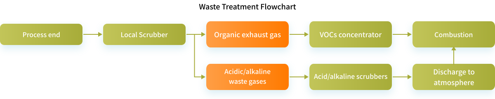

Water Pollution Control
-
 Professional Treatment and Continuous Monitoring to Ensure Water Quality Standards
Professional Treatment and Continuous Monitoring to Ensure Water Quality StandardsAll wastewater at Nanya Technology is collected and categorized before being discharged to the appropriate treatment facilities. Every quarter, we commission a third-party organization to conduct monitoring surveys on the local ecology, hydrology, and air quality around the facilities. To ensure that effluent water quality falls within normal parameters and to address concerns among residents in the discharge basin, Nanya Technology has implemented a real-time effluent monitoring system that is directly connected to the Environmental Protection Department, enabling joint real-time monitoring to ensure effluent water quality remains normal.
-
 Strengthened Wastewater Management
Strengthened Wastewater ManagementWe have remained committed to water pollution prevention and continue to upgrade and invest in wastewater treatment facilities. 28 distinct pipelines are used to segregate and convey the different types of wastewaters within the facility, In 2025, total wastewater discharge reached 3,017 million liters. Due to non-conforming handling of the membrane bioreactor (MBR) system during wastewater treatment, the volume of water reclaimed decreased, leading to an increase in wastewater discharge. As a result, total wastewater discharge in 2025 rose by 5.4% compared to 2024.
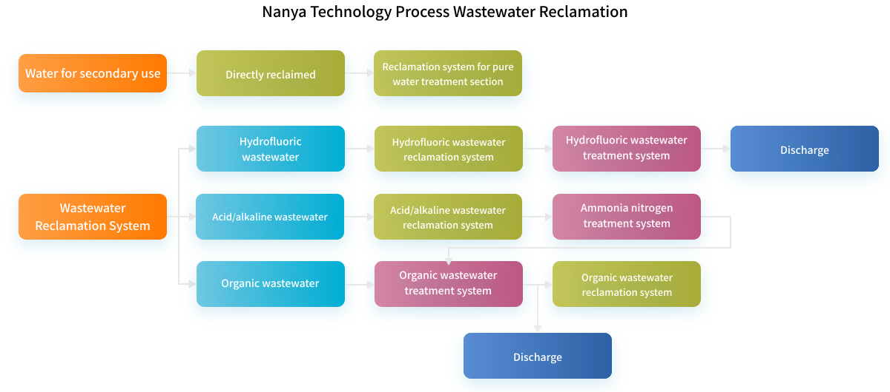
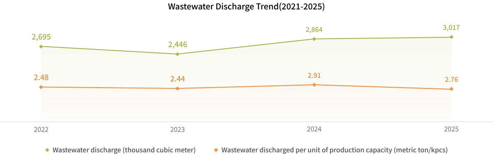
Explore the full story here
Download
 ESG News
ESG News
 Facebook
Facebook